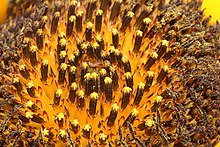

Common Sunflower
From Wikipedia, the free encyclopedia
Contents

Description
The plant has an erect rough-hairy stem, reaching typical heights of 3 metres (10 feet). The tallest sunflower on record achieved 9.17 m (30 ft 1 in).[3] Sunflower leaves are broad, coarsely toothed, rough and mostly alternate; those near the bottom are largest and commonly heart-shaped.[4]
Flower
The plant flowers in summer. What is often called the Flower of the sunflower is actually a "flower head" (pseudanthium), 7.5–12.5 centimetres (3–5 in) wide,[4] of numerous small individual five-petaled flowers ("florets"). The outer flowers, which resemble petals, are called ray flowers. Each "petal" consists of a ligule composed of fused petals of an asymmetrical ray flower. They are sexually sterile and may be yellow, red, orange, or other colors. The spirally arranged flowers in the center of the head are called disk flowers. These mature into fruit (sunflower "seeds").
The prairie sunflower (H. petiolaris) is similar in appearance to the wild common sunflower; the scales in its central disk are tipped by white hairs.[4]
Heliotropism
A common misconception is that flowering sunflower heads track the Sun across the sky. Although immature flower buds exhibit this behaviour, the mature flowering heads point in a fixed (and typically easterly) direction throughout the day.[5][6] This old misconception was disputed in 1597 by the English botanist John Gerard, who grew sunflowers in his famous herbal garden: "[some] have reported it to turn with the Sun, the which I could never observe, although I have endeavored to find out the truth of it."[7] The uniform alignment of sunflower heads in a field might give some people the false impression that the flowers are tracking the Sun.
This alignment results from heliotropism in an earlier development stage, the young flower stage, before full maturity of flower heads (anthesis).[8] Young sunflowers orient themselves in the direction of the sun. At dawn the head of the flower faces east and moves west throughout the day. When sunflowers reach full maturity they no longer follow the sun, and continuously face east. Young flowers reorient overnight to face east in anticipation of the morning. Their heliotropic motion is a circadian rhythm, synchronized by the sun, which continues if the sun disappears on cloudy days or if plants are moved to constant light.[9] They are able to regulate their circadian rhythm in response to the blue-light emitted by a light source.[9] If a sunflower plant in the bud stage is rotated 180°, the bud will be turning away from the sun for a few days, as resynchronization with the sun takes time.[10]
When growth of the flower stalk stops and the flower is mature, the heliotropism also stops and the flower faces east from that moment onward. This eastward orientation allows rapid warming in the morning and, as a result, an increase in pollinator visits.[9] Sunflowers do not have a pulvinus below their inflorescence. A pulvinus is a flexible segment in the leaf stalks (petiole) of some plant species and functions as a 'joint'. It effectuates leaf motion due to reversible changes in turgor pressure, which occurs without growth. The sensitive plant's closing leaves are a good example of reversible leaf movement via pulvinuli.
Floret arrangement
Illustration of Vogel's model for n=1 ... 500
Generally, each floret is oriented toward the next by approximately the golden angle, 137.5°, producing a pattern of interconnecting spirals, where the number of left spirals and the number of right spirals are successive Fibonacci numbers. Typically, there are 34 spirals in one direction and 55 in the other; however, in a very large sunflower head there could be 89 in one direction and 144 in the other.[11][12][13] This pattern produces the most efficient packing of seeds mathematically possible within the flower head.[14][15][16]
A model for the pattern of florets in the head of a sunflower was proposed by H. Vogel in 1979.[17] This is expressed in polar coordinates
where θ is the angle, r is the radius or distance from the center, and n is the index number of the floret and c is a constant scaling factor. It is a form of Fermat's spiral. The angle 137.5° is related to the golden ratio (55/144 of a circular angle, where 55 and 144 are Fibonacci numbers) and gives a close packing of florets. This model has been used to produce computer generated representations of sunflowers.[18]
Genome
The sunflower genome is diploid with a base chromosome number of 17 and an estimated genome size of 2,871–3,189 million base pairs.[19][20] Some sources claim its true size is around 3.5 billion base pairs (slightly larger than the human genome).[21]
Uses
Sunflower "whole seed" (fruit) are sold as a snack food, raw or after roasting in ovens, with or without salt and/or seasonings added. Sunflowers can be processed into a peanut butter alternative, sunflower butter. It is also sold as food for birds and can be used directly in cooking and salads. Native Americans had multiple uses for sunflowers in the past, such as in bread, medical ointments, dyes and body paints.[51]
Sunflower oil, extracted from the seeds, is used for cooking, as a carrier oil and to produce margarine and biodiesel, as it is cheaper than olive oil. A range of sunflower varieties exist with differing fatty acid compositions; some "high-oleic" types contain a higher level of monounsaturated fats in their oil than even olive oil. The oil is also sometimes used in soap.[52] After World War I, during the Russian Civil War, people in Ukraine used sunflower seed oil in lamps as a substitute for kerosene due to shortages. The light from such a lamp has been described as "miserable" and "smoky."[53]
The cake remaining after the seeds have been processed for oil is used as a livestock feed.[54] The hulls resulting from the dehulling of the seeds before oil extraction can also be fed to domestic animals.[55] Some recently developed cultivars have drooping heads. These cultivars are less attractive to gardeners growing the flowers as ornamental plants, but appeal to farmers, because they reduce bird damage and losses from some plant diseases. Sunflowers also produce latex, and are the subject of experiments to improve their suitability as an alternative crop for producing hypoallergenic rubber.
Traditionally, several Native American groups planted sunflowers on the north edges of their gardens as a "fourth sister" to the better-known three sisters combination of corn, beans, and squash.[56] Annual species are often planted for their allelopathic properties.[57] It was also used by Native Americans to dress hair.[52] Among the Zuni people, the fresh or dried root is chewed by the medicine man before sucking venom from a snakebite and applying a poultice to the wound.[58] This compound poultice of the root is applied with much ceremony to rattlesnake bites.[59]
However, for commercial farmers growing other commodity crops, the wild sunflower is often considered a weed. Especially in the Midwestern US, wild (perennial) species are often found in corn and soybean fields and can decrease yields. The decrease in yield can be attributed to the production of phenolic compounds which are used to reduce competition for nutrients in nutrient-poor growing areas of the common sunflower.[60]
Sunflowers can be used in phytoremediation to extract toxic ingredients from soil, such as lead, arsenic and uranium, and used in rhizofiltration to neutralize radionuclides and other toxic ingredients and harmful bacteria from water. They were used to remove caesium-137 and strontium-90 from a nearby pond after the Chernobyl disaster,[61] and a similar campaign was mounted in response to the Fukushima Daiichi nuclear disaster.[62][63][64]
Culture
During the 19th century, it was believed that nearby plants of the species would protect a home from malaria.[52]
The Zuni people use the blossoms ceremonially for anthropic worship.[65] Sunflowers were also worshipped by the Incas because they viewed it as a symbol for the Sun.[66]
The flowers are the subject of Vincent van Gogh's Sunflowers series of still-life paintings.
In July 2015, viable seeds were acquired from the field where Malaysia Airlines Flight 17 crashed on a year earlier and were grown in tribute to the 15 Dutch residents of Hilversum who were killed.[67] Earlier that year, Fairfax chief correspondent Paul McGeough and photographer Kate Geraghty had collected 1.5 kg of sunflower seeds from the wreck site for family and friends of the 38 Australian victims, who aimed to give them a poignant symbol of hope.[68]
On May 13, 2021, during the National Costume competition of the Miss Universe 2020 beauty pageant, Miss Dominican Republic Kimberly Jiménez wore a "Goddess of Sunflowers" costume covered in gold and yellow rhinestones[69] that included several real sunflowers sewn onto the fabric.
Modern stories often claim that in Greek mythology, the nymph Clytie transformed into a sunflower when she pined after her former lover Helios, the god of the sun, who spurned her and left her for another. However, sunflowers are not native to Greece or Italy, but to North America.[70] The original story is about another flower, the heliotropium.[71]
National and state symbol
The sunflower is the national flower of Ukraine. Ukrainians used sunflower as a main source of cooking oil instead of butter or lard forbidden by the Orthodox Church when observing Lent. They were planted to clean nuclear waste in Chernobyl mentioned before. In June 1996, United States, Russia and Ukraine officials planted sunflowers at the Pervomaysk missile base where Soviet nuclear weapons were formerly placed.[64] During the 2022 Russian invasion, a video widely shared on social media showed a Ukrainian woman confronting a Russian soldier, telling the latter to "take these seeds and put them in your pockets so at least sunflowers will grow when you all lie down here".[72] The sunflower has since become a global symbol of resistance, unity, and hope.[73]
The sunflower is also the state flower of the US state of Kansas,[4] and one of the city flowers of Kitakyūshū, Japan.
Movement symbol
During the late 19th century, the flower was used as the symbol of the Aesthetic Movement.
The sunflower was chosen as the symbol of the Spiritualist Church, for many reasons, but mostly because of the (false) belief that the flowers turn toward the sun as "Spiritualism turns toward the light of truth". Modern Spiritualists often have art or jewelry with sunflower designs.[74]
The sunflower is often used as a symbol of green ideology. The flower is also the symbol of the Vegan Society.
The sunflower is the symbol behind the Sunflower Movement, a 2014 mass protest in Taiwan.
The Hidden Disabilities Sunflower was first used as a visible symbol (typically worn on a lanyard) May 2016 at London Gatwick Airport. It has since come into common usage throughout the UK, and in the Commonwealth more generally.[75]